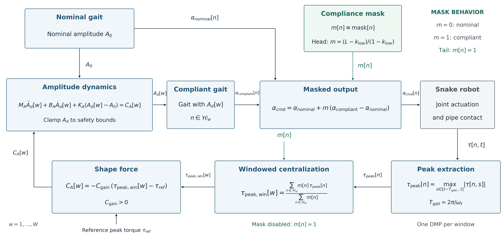

Compliant control: deviation-driven shape-based compliance (DSBC) controller
Standard shape-based compliance cannot distinguish the contact load from the steady load required to hold the robot on the pipe, and consequently relaxes its grip under gravitational loading alone. I developed the DSBC controller to resolve this: it filters the measured joint torque against a reference, treats only the deviation as contact, and modulates the commanded joint angles to tighten or loosen the wrap in response. Removing the need to over-grip reduced traversal times by roughly half across straight pipes, obstacles and junctions, and lowered joint actuation effort throughout. It also allows the robot to adapt to changes in pipe diameter autonomously, without any change of command from the operator.

DSBC controller block diagram. Click to enlarge.